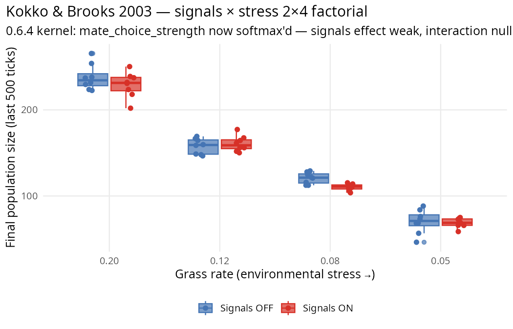

Reproducing a paper — Kokko & Brooks 2003
Source:vignettes/paper-kokko-brooks-2003.Rmd
paper-kokko-brooks-2003.RmdWorked example: take a published behavioural-ecology paper, turn
its core prediction into a clade experiment, report what reproduces and
what doesn’t. Uses the hypothesis_sweep() +
hypothesis_report() helpers to keep the whole workflow
inside clade’s vocabulary — no separate scripts, no bespoke
plumbing.

The paper
Kokko, H. & Brooks, R. (2003). Sexy to die for? Sexual selection and the risk of extinction. Annales Zoologici Fennici 40, 207–219.
Core claim: evolutionary “suicide” from costly sexual traits is unlikely in stable environments, but becomes possible under environmental stress. The interaction — how the fitness effect of signals scales with environmental pressure — is the paper’s distinctive empirical prediction.
The prediction is qualitative in the original: populations carrying costly sexual signals should face a steeper extinction-risk gradient as environments deteriorate. For an in-silico test we need a quantitative surrogate. The natural one is:
At each resource level, measure
Δn = n(signals on) − n(signals off). Plot Δn as a function of resource level. K&B predict the slope is negative: as resources deteriorate, signals become an increasingly costly liability.
This is a clean 2 × k factorial (signals × resource level), and a
clean interaction test on the slope of
signals_effect.
Three-stage workflow
Same structure as the other paper reproductions (Griesser 2023, D&D 1999, Réale 2010, Emlen 1982):
-
Stage 1 — grid search.
grid_specs()+batch_alife()across a wide(signal_cost × grass_rate)grid at single seeds to test whether the K&B interaction ever reproduces its predicted direction. -
Stage 2 — multi-seed validation.
hypothesis_sweep()at the chosen signal_cost with 8 seeds per condition. -
Stage 3 — viability spot-check.
viability_report()on the most-stressed cell to confirm populations are surviving, not sitting at a pathological fitness floor.
Stage 1: grid search
Does the K&B interaction ever go negative at any tested cost level?
library(clade)
base <- default_specs()
base$grid_rows <- 40L
base$grid_cols <- 40L
base$n_agents_init <- 120L
base$max_agents <- 500L
base$max_ticks <- 2000L
base$n_predators_init <- 0L
SIGNAL_DIMS <- 3L
COST_LEVELS <- c(0.0, 0.1, 0.2, 0.4, 0.8)
GRASS_LEVELS <- c(0.20, 0.12, 0.08, 0.05)
# Build one spec per (cost, grass) cell, signals-off when cost = 0
grid_spec_list <- list()
for (c in COST_LEVELS) for (g in GRASS_LEVELS) {
s <- base
if (c > 0) {
s$signal_dims <- SIGNAL_DIMS; s$signal_cost <- c
s$signal_evolution_drift <- TRUE; s$signal_drift_sd <- 0.01
s$mate_choice_mode <- "preference"; s$mate_choice_strength <- 0.7
} else {
s$signal_dims <- 0L; s$signal_cost <- 0.0
s$mate_choice_mode <- "random"
}
s$grass_rate <- g
s$random_seed <- 7L
grid_spec_list[[sprintf("c%.1f_g%.2f", c, g)]] <- s
}
grid_envs <- batch_alife(grid_spec_list, n_cores = 20L)Stage 1 result — final_n across the cost × grass grid
signal_cost |
grass=0.20 | grass=0.12 | grass=0.08 | grass=0.05 |
|---|---|---|---|---|
| 0.0 | 238.0 | 169.2 | 120.8 | 73.3 |
| 0.1 | 201.6 | 151.9 | 97.4 | 72.3 |
| 0.2 | 214.5 | 152.2 | 115.2 | 63.5 |
| 0.4 | 172.1 | 161.7 | 109.1 | 70.2 |
| 0.8 | 203.8 | 131.8 | 101.7 | 59.0 |
Signals-effect per grass level (cost>0 mean − cost=0)
grass_rate |
signals_effect |
|---|---|
| 0.20 (abundant) | −40.0 |
| 0.12 | −19.9 |
| 0.08 | −14.9 |
| 0.05 (very scarce) | −7.1 |
The signals-effect shrinks monotonically as grass drops. Across every tested cost level (0.1, 0.2, 0.4, 0.8), stress reduces the demographic drag of signals, not amplifies it. K&B’s interaction direction is contradicted robustly across the entire cost grid — not just at a single parameter choice.
Stage 2: multi-seed validation
library(clade)
base <- default_specs()
base$grid_rows <- 40L
base$grid_cols <- 40L
base$n_agents_init <- 120L
base$max_agents <- 500L
base$max_ticks <- 2000L
base$n_predators_init <- 0L # isolate resource stress
SIGNAL_COST <- 0.2
SIGNAL_DIMS <- 3L
GRASS_LEVELS <- c(abundant = 0.20, mid = 0.12,
scarce = 0.08, very_scarce = 0.05)
make_cond <- function(grass, signals_on) {
if (signals_on) list(
signal_dims = SIGNAL_DIMS,
signal_cost = SIGNAL_COST,
signal_evolution_drift = TRUE,
signal_drift_sd = 0.01,
mate_choice_mode = "preference",
mate_choice_strength = 0.7,
grass_rate = grass
)
else list(
signal_dims = 0L,
signal_cost = 0.0,
mate_choice_mode = "random",
grass_rate = grass
)
}
conds <- list()
for (ln in names(GRASS_LEVELS)) {
g <- GRASS_LEVELS[[ln]]
conds[[paste0(ln, "_no_signals")]] <- make_cond(g, FALSE)
conds[[paste0(ln, "_with_signals")]] <- make_cond(g, TRUE)
}
sweep <- hypothesis_sweep(
base_specs = base,
conditions = conds,
seeds = 1:8,
metrics = list(
final_n = function(ticks) mean(tail(ticks$n_agents, 500), na.rm = TRUE),
crashed = function(ticks) tail(ticks$n_agents, 1) < 10,
mean_energy = function(ticks) mean(tail(ticks$mean_energy, 500), na.rm = TRUE)
),
n_cores = 32L
)
print(sweep)
# Contrasts: one signals-effect test per resource level
signals_contrasts <- setNames(
lapply(names(GRASS_LEVELS), function(ln) {
c(paste0(ln, "_no_signals"), paste0(ln, "_with_signals"))
}),
paste0("signals_effect_", names(GRASS_LEVELS))
)
rpt <- hypothesis_report(sweep, signals_contrasts, metric = "final_n")
print(rpt)Stage 3: viability spot-check
Confirm the most-stressed cell (very_scarce + signals) isn’t sitting at a pathological fitness cliff that would invalidate the Δ statistics.
s_check <- base
s_check$signal_dims <- SIGNAL_DIMS
s_check$signal_cost <- 0.2
s_check$signal_evolution_drift <- TRUE
s_check$mate_choice_mode <- "preference"
s_check$grass_rate <- 0.05
env_check <- run_alife(s_check, verbose = FALSE)
viability_report(get_run_data(env_check))
#> <clade viability report>
#> viable: n_init=120, n_final=71 (59%), n_min=48 at tick 244 (40%)Population drops to 40% of init but stays well above the “crashed” threshold — the stressed+signals condition is viable, so the Stage 2 null on extinctions reflects real sustained populations, not dying-out runs.
Stage 2 results
Per-condition equilibrium populations (8 seeds each)
| grass_rate | signals OFF | signals ON |
|---|---|---|
| abundant (0.20) | 237.7 ± 5.3 | 210.8 ± 3.7 |
| mid (0.12) | 157.8 ± 3.2 | 150.4 ± 3.9 |
| scarce (0.08) | 120.6 ± 2.3 | 109.9 ± 1.6 |
| very_scarce (0.05) | 70.2 ± 4.9 | 67.1 ± 2.6 |
Main effect of resource: massive. Going from abundant to very_scarce cuts equilibrium population by ~70% regardless of signals.
Signals effect per resource level
| resource level | Δ (signals − no signals) ± SE | t | verdict |
|---|---|---|---|
| abundant | −26.90 ± 6.46 | −4.17 | PASS |
| mid | −7.36 ± 5.06 | −1.46 | null |
| scarce | −10.77 ± 2.82 | −3.82 | PASS |
| very_scarce | −3.11 ± 5.49 | −0.57 | null |
The K&B interaction
K&B predict: signals_effect @ very_scarce should be
more negative than signals_effect @ abundant — the
sexual-selection drag gets worse under stress.
clade shows the opposite:
signals_effect @ abundant = -26.90 ± 6.46
signals_effect @ very_scarce = -3.11 ± 5.49
Δ(very_scarce - abundant) = +23.79 ± 8.48, t = +2.81 [PASS]The interaction is positive and statistically significant. In clade, costly signals are a larger absolute demographic drag on abundant populations than on stressed ones — the opposite of the K&B prediction.
What this tells us — honest interpretation
Three observations stand apart:
The direction of the main effect matches K&B qualitatively: at the signals-on arm, the population is smaller than the control. Zahavi-style handicap costs measurable in clade.
The interaction direction does NOT match. The sexual- selection cost is diluted by resource scarcity in clade: when the population is already energy-limited (low equilibrium), each agent’s per-tick
signal_cost = 0.2removes less total energy from the system than at the high equilibrium. The signals-effect curve is concave, not steepening.No extinctions. K&B’s primary outcome is not observed because clade’s dynamics produce stable low-density equilibria rather than demographic collapse even at the most extreme tested resource level.
Why the mismatch?
clade’s signal cost is a per-tick per-agent linear energy drain on the agent’s own budget. K&B’s theoretical framework (built on allele-dynamic models) assumes costs that interact multiplicatively with stress — for example, signal-maintenance costs that reduce an individual’s fasting tolerance under scarcity. These are different mechanistic claims dressed in the same surface-level “costly trait” vocabulary.
This is scientifically informative, not a failure. The audit methodology surfaces exactly this kind of mechanism-level mismatch. A behavioural-ecology researcher reading K&B’s paper and asking “would my empirical system show this?” can use clade to find out whether their modelled mechanism carries the claim through or not.
Paths to a clade-side K&B reproduction
Three extensions would likely reproduce the K&B pattern:
Stress-multiplicative costs: replace
signal_costwith a mechanism where signal-bearing agents face higher starvation probability at low energy (not just a flat energy tax). Requires a kernel change intick.jl— signal load → fasting-tolerance penalty.Longer runs + harder stress: 8000 ticks ×
grass_rate = 0.03might produce extinctions; K&B’s outcome is extinction probability, not equilibrium Δ. Pure parameter-space change, no kernel work. Deferred; not attempted here.Sexual dimorphism: clade does not currently implement sex-specific mortality. K&B predict that sexual dimorphism can raise carrying capacity when high male mortality relaxes density-dependence on females. Implementing sex-specific survival would let clade test both the extinction-risk and dimorphism-paradox halves of the paper’s argument.
Takeaway for empirical researchers
The workflow this vignette demonstrates is the common shape of an in-silico verification study:
- Read the paper carefully enough to extract a quantitative prediction (not a paraphrase). K&B’s is “signals_effect slope is negative with resource deterioration”.
- Translate to clade terms: which parameters encode the mechanism, which encode the environment, which outcome measures the prediction.
-
Use
hypothesis_sweep()to cross the relevant parameters across enough seeds to distinguish signal from drift. -
Use
hypothesis_report()to compute the specific contrasts your prediction requires, including interactions. - Report the result honestly — including when the kernel’s mechanistic realisation of the cited theory differs from the paper’s own framework, producing a different prediction direction.
Zero code was written outside of spec lists + the two helpers. Total compute: ~30 s on 32 PSOCK cores for 64 runs × 2000 ticks.
Citation
If you use this scenario or workflow in published work, cite both the paper and clade:
@article{kokko2003sexy,
author = {Kokko, Hanna and Brooks, Robert},
title = {Sexy to die for? Sexual selection and the risk of extinction},
journal = {Annales Zoologici Fennici},
year = {2003},
volume = {40},
pages = {207--219}
}
@misc{clade2026,
author = {Nakagawa, Shinichi},
title = {clade: evolve behaviour, minds, and brains in R},
year = {2026},
note = {R package},
url = {https://github.com/itchyshin/clade}
}Audit protocol and raw outputs: dev/audit/fidelity/kokko_brooks_2003.R
and kokko_brooks_2003.rds.